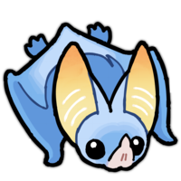

OversampleA free, browser-based tool for viewing and analyzing bat echolocation calls. Load a recording, explore the spectrogram, and identify species — no install required.
Works in any modern browser. Your files stay on your device.
High-resolution spectrogram rendering with multiple color maps, zoom, and pan. Waveform view for time-domain analysis.
Heterodyne, time expansion, and pitch shift modes let you hear bat calls that are normally beyond human hearing.
Open WAV, FLAC, OGG, and MP3 files. All decoding happens locally in your browser — nothing is uploaded.
Built-in species reference to help identify calls by region, frequency range, and call shape.
Browse and stream wildlife recordings from the Xeno-Canto database directly within the app.
All processing runs client-side. Your audio files never leave your device. Works offline once loaded.
No account, no installation, no upload. Just open and go.
Drag and drop a bat call file, or try one of the built-in demo recordings.
Zoom into the spectrogram, listen in different modes, and compare with known species.
Oversample works in the browser and as a native app for more features like microphone recording.